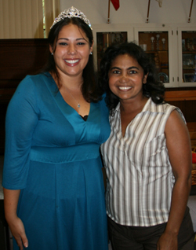
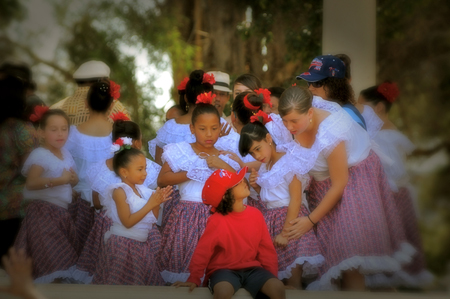

HOME
The Gift of LIFE by Daisy Cruz |
|
It is easy to get caught up with our daily routines; home, work, family, school. Sometimes we get so enticed with these obligations, however, that we almost forget the true pleasures of life. The same pleasures that make our life worth living. It is easy to take life for granted sometimes, including family, friendship, good health, and love. It is only when we find ourselves missing one or more of these that we finally realize how important they truly are. Similarly, it took the entrance of someone special in my life to help me comprehend the true meaning of strength and perseverance, a vivid example of not only Latina empowerment, but an overall inspiration to all women. In just one year, Angie Freeman has accomplished what few have only imagined. She has positively impacted the lives of boys and girls of all ages, our Jovenes Boricuas, teaching them the importance of knowing our Hispanic culture and how to be an asset to our surrounding community. Angie was able to recruit children and parents as participants in the Jovenes Boricuas and Reinitas Borincanas programs. Many would agree that this first year has been quite successful with various performances and community service events. When first meeting Angie, many will be captivated by her vibrant smile and cheerful personality. Angie is not only a mentor but she is also a real life hero to many children and adults, including myself. The more I got to know Angie, the more I realized that life is a gift that one must appreciate and treasure. It isn’t until much later when I knew more about her and her life story that I learned that she suffers from leukemia and aplastic anemia. In order to surpass her illness, Angie constantly needs blood transfusions.  This holiday season, I ask that you and your loved ones think of not only Angie, but many others that might be in a similar situation. The truth is that we all have the power to give the gift of life. It only takes a few minutes to donate blood and as a result, we can positively impact the lives of those fighting disease and create new hope. This giving of life is a wonderful tradition that we can pass down generations to come. In doing so, we are passing down the gift of appreciating the simple pleasures that life has to offer. In Angie’s case, donating blood would mean giving her an opportunity to continue being such a valuable asset in our lives and a chance to continue being an inspirational mother, friend, and mentor to her family and those that surround her brilliant being. Participate in a blood drive, find a blood bank, donate blood; you may never know how much of a difference you could make in someone’s life by giving them a glimpse of hope, a glimpse of strength, and a glimpse of life. You can donate blood at any point during the year. Check out the SDBB website to query for a blood drive near you.
|